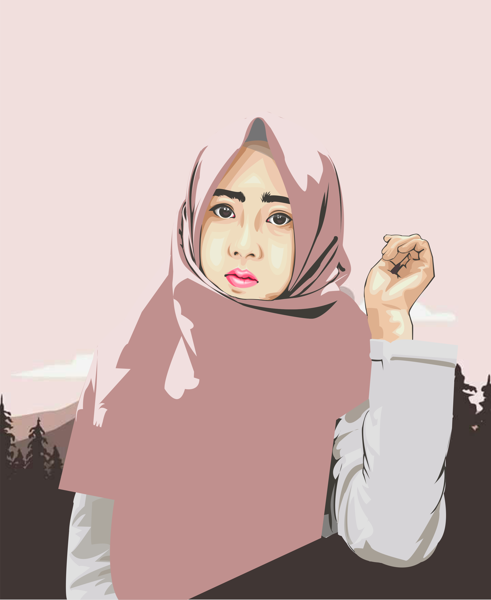
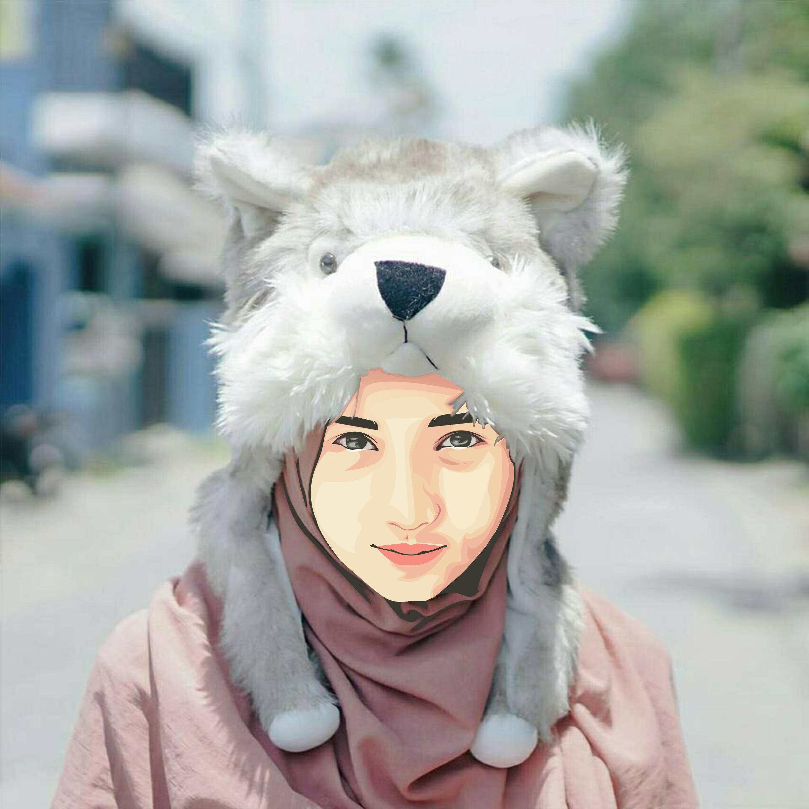
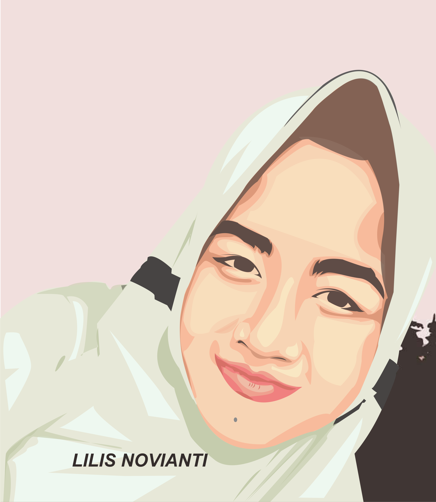
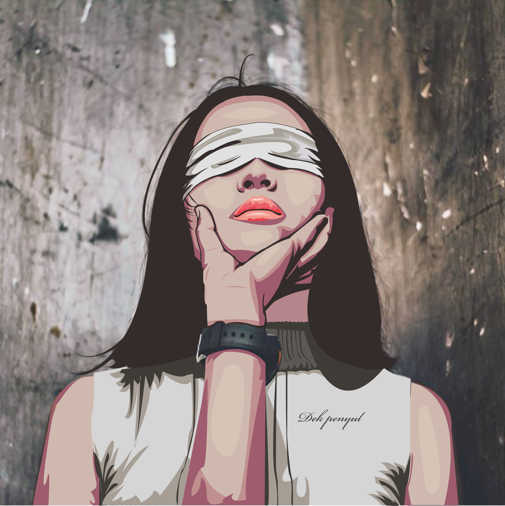

|  |
 |
 |
 |
Salah satu hobbi saya adalah menggambar, yaitu gambar vektor. Apa itu Gambar Vektor?
Gambar Vektor adalah gambar yang menggunakan poligon untuk membuat gambar pada komputer grafis. Pada dasarnya gambar vektor menggunakan vektor.
Lokasi-lokasi pada vektor dinamakan control point atau nodes. Setiap posisi ini memiliki posisi yang pasti berdasarkan sumbu x dan y dari bidang kerja dan menentukan arah jalan.
Setiap alur pada vektor bisa ditambahkan atribut, termasuk ketebalan garis, bentuk, kurva, warna garis, dan warna isi.
BACK